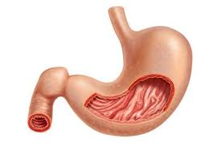

प्लीहा

प्लीहा या 'तिल्ली' सभी रीढ़धारी प्राणियों में पाया जाने वाला एक महत्त्वपूर्ण अंग है। यह मानव शरीर में पेट में स्थित रहता है।
- यह पुरानी लाल रक्त कोशिकाओं को नष्ट करने का कार्य करता है।
- प्लीहा रक्त का संचित भंडार भी है।
- यह रोग निरोधक तंत्र का एक भाग है।
- प्लीहा या तिल्ली आमतौर पर मानव पेट के बाएँ ऊपरी चतुर्भाग में स्थित होती है।